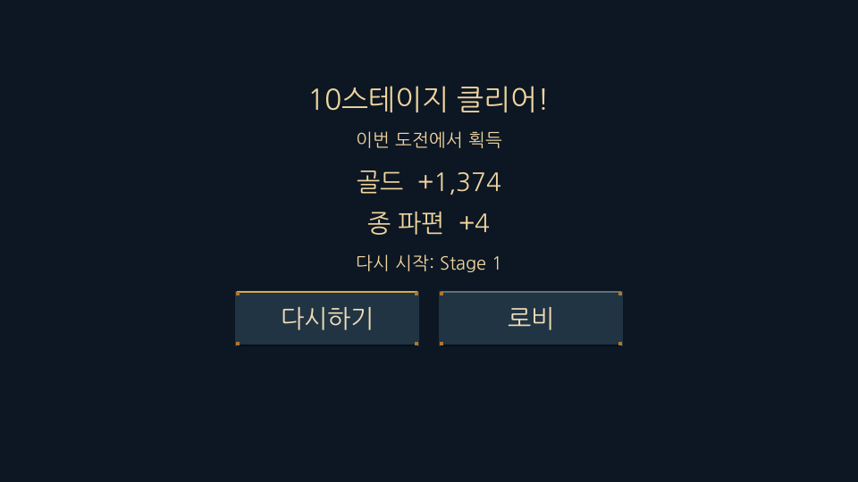
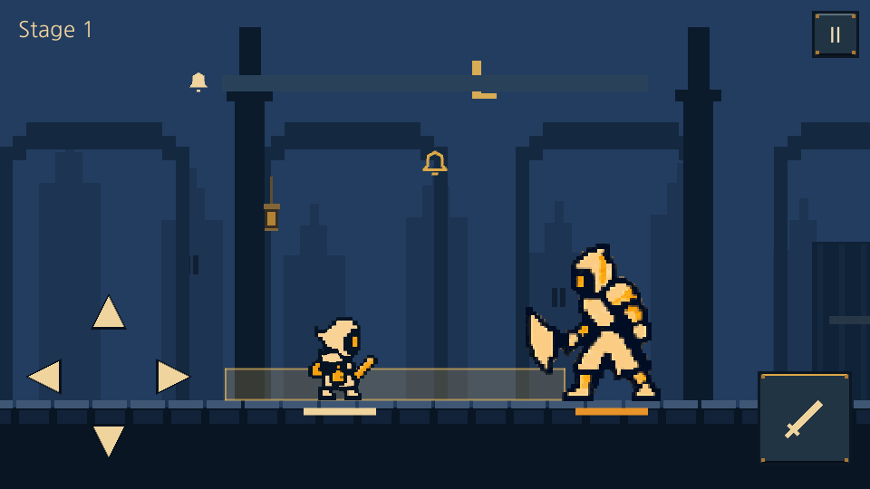
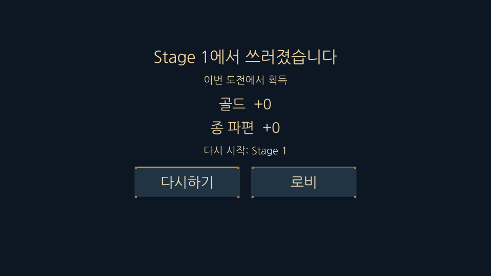
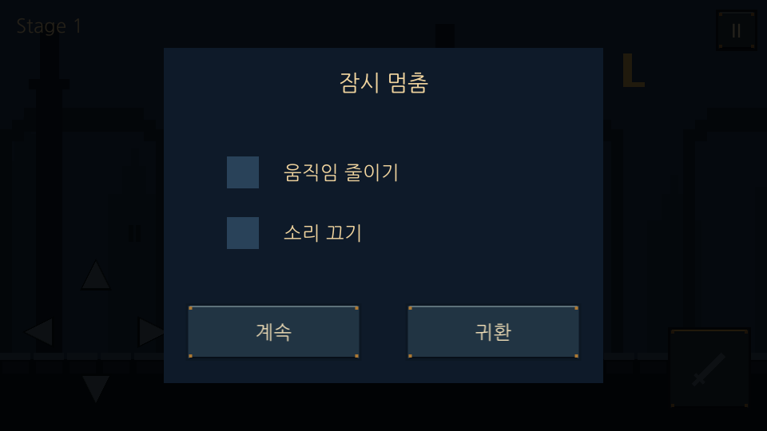

LAST BELL · 2026.10.22 · mvp-1.5.0
10스테이지에서 마무리,
다음 도전은 1스테이지부터.
웹에서 게임하기 ↗
10스테이지의 스토리와 유물 보상 선택 뒤 클리어 결과를 표시합니다. 클리어·사망 후 다시하기와 로비 출전은 모두1스테이지부터 시작하며 재화·강화·유물은 유지합니다.
네 방향키·WASD 회피, Space 공격. 상단은 ↓/S로 검을 쳐내는 회피를 사용합니다. 0·240·480ms 점멸 →720ms 접촉.

실제 게임: 10스테이지 클리어와 획득 재화
실제 게임: 다시하기는1스테이지
새 도전의 획득 재화를 별도로 집계
재실행 시 강화·장비와 진행 복구Unity 134개 규칙·18개 화면/입력 검사, 데이터19개, 독립 계약808개 항목 통과. 실제 전체 진행·클리어·재도전·저장 재실행 확인.
검증 기록 · 웹 빌드 ZIP